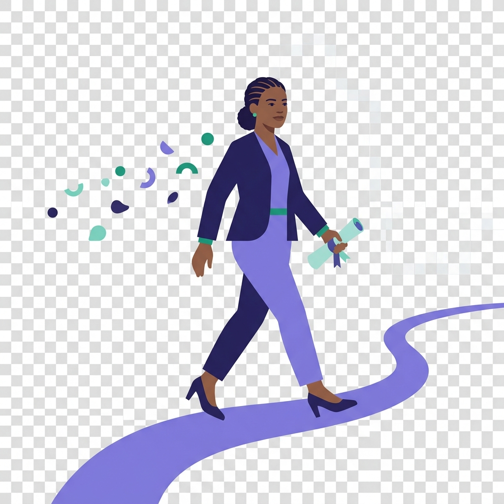
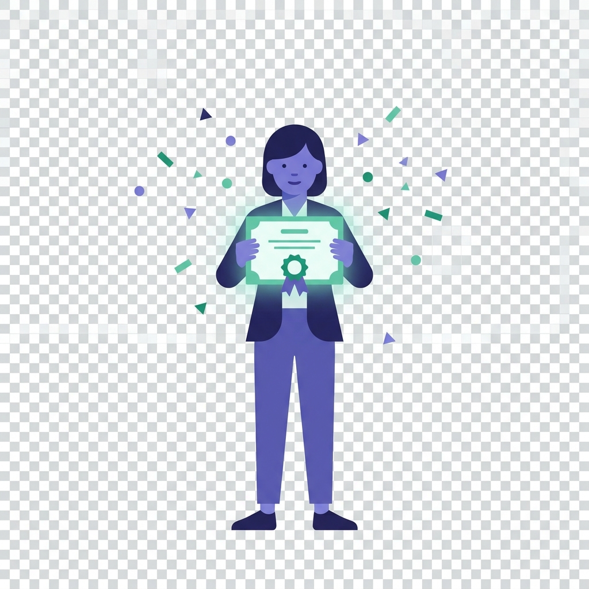
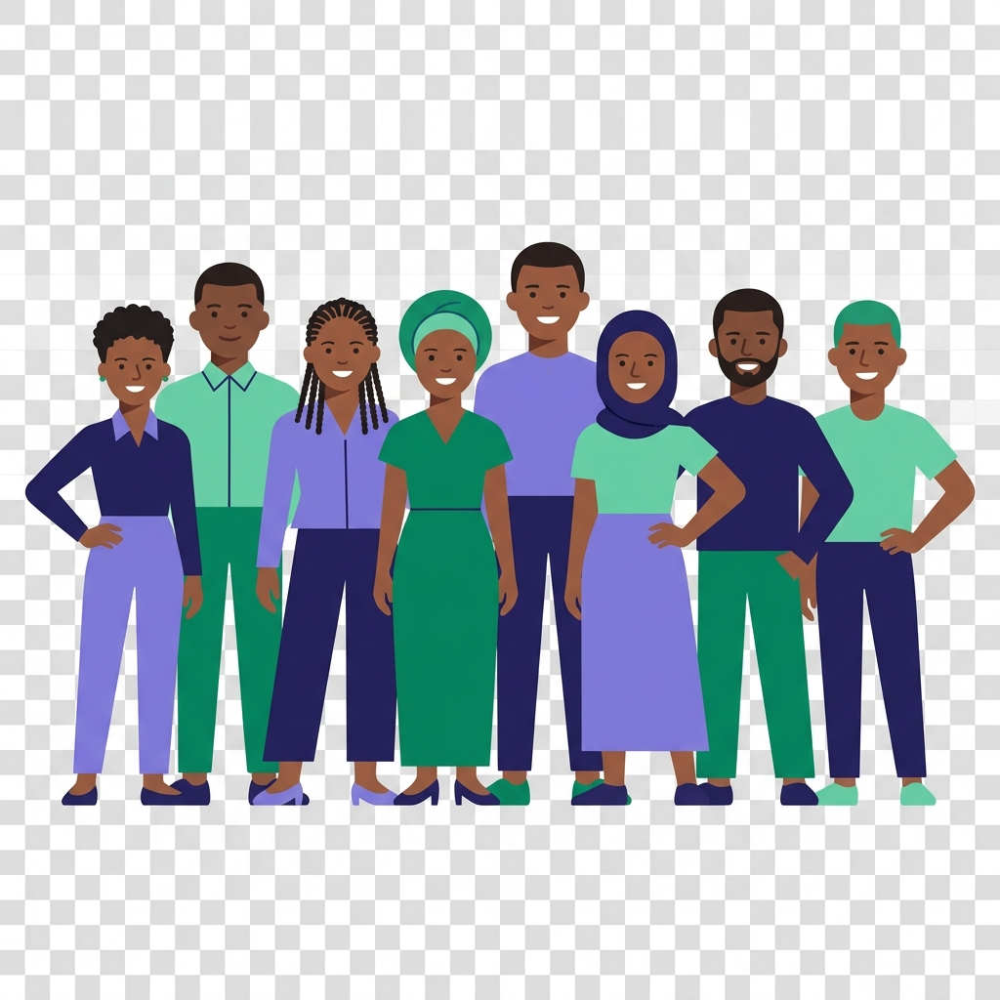

Gigway connects verified NGOs and companies with young volunteers in Lagos — skilled and physical gigs alike — and turns every one you complete into proof you can show.
Free to join. Verified organizations, real certificates, no CV required to start.

Every skilled young Nigerian hits this wall right after finishing a course or graduating — and today, the only options are informal WhatsApp groups, flyers, or global directories that aren't built for Nigeria.
graduates enter Nigeria's job market every year, most without proof of applied skill
NGOs registered in Nigeria — nearly all recruiting volunteers by word of mouth
Nigerian platforms that combine short gigs, verification, and certification in one place
Two sides, one path forward — verified organizations post real work, and volunteers walk away with proof they can actually use.
Real gigs — skilled or physical — with real proof at the end of them.
Skip the WhatsApp-group recruiting grind entirely.
Browse open roles from verified NGOs and companies near you.
Apply in a tap. The organization picks who shows up.
On completion, a verified certificate is issued instantly.
Show employers real, verifiable proof of what you can do.

Every gig completed on Gigway produces a real, verifiable certificate — something an employer, a school, or the next NGO can actually check, not just a line on a CV nobody can confirm.
No existing platform packages short-term Nigerian gigs, verification, and certification in one place — not Catchafire (US-only, professional-skills only), not global directories, not word of mouth.
"Every gig completed here adds a verified data point to a volunteer's track record and an NGO's reliability record — the more that accumulates, the harder it is for anyone else to catch up."
The Gigway thesis

Takes under a minute. Verified organizations, real certificates, zero cost to join.
Check your inbox to confirm your email and finish setting up.